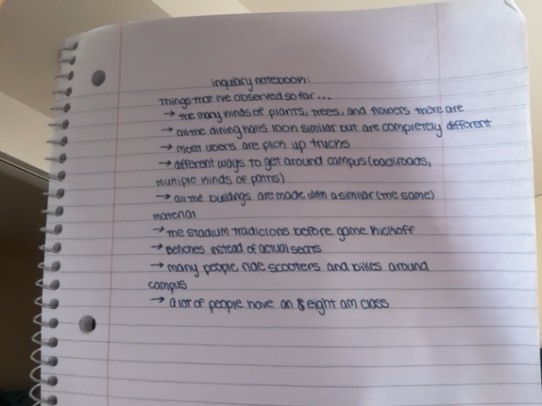

My name is Jaden Coughlin and I my major is Sports Media and Management. I’m from Long Island, New York. I’ve always had a love for sports, but more specially I loved working behind the scenes, rather than actually playing. I was apart of my high schools varsity’s cheer team, managed the play book at my younger sisters club volleyball team, and always loved attending my younger sisters games. In high school I was also part of the Key Club, where I would volunteer at many different places, I was also apart of Student Government, which I especially loved because I love to be involved with my community. Here at Indiana University, I am interested in continuing my volunteer work and getting involved through clubs and organizations. I enjoy reading, however I find that I do not read as much as I would like to. I love a good book when I'm intrested. One of my favorite authors is Colleen Hoover. I do not typically write a lot, unless I am assigned to. I am somewhat creative, however sometimes it takes me a while to come up with a great idea, but once I have something good, I simply can’t stop.
